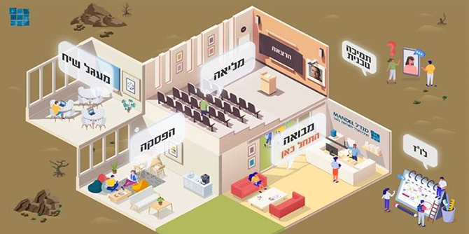

The joint study day for fellows of all programs, a longstanding tradition of the Mandel Center for Leadership in the Negev, took a very different form this year due to the restrictions of the coronavirus. The Center's staff, led by faculty member
Dr. Einav Aizikovitsh-Udi and with assistance from many Mandel Foundation employees, set up a “physital” (physical-digital) space that enabled all participants to feel, at least somewhat, as if they were taking part in a real-world event. Via their computers, participants were able to navigate through virtual physical spaces, entering lecture halls and group meeting rooms, viewing relevant video clips and articles, and hanging out during breaks while listening to music of their choice and most importantly, meeting with one another.

The fellows of Cohort 4 of the Mandel Program for Regional Leadership in Beer Sheva, Cohort 3 of the Mandel Program for Cultural Leadership in the Negev, and the Mandel Program for Regional Leadership in the Gaza Border Communities came together for a day that was designed to introduce them to one another and to foster a community of fellows dedicated to improving the quality of life in the Negev. As part of this unique event, the fellows participated in an innovative new icebreaking exercise, led by
Professor Smadar Ben-Asher, called “The Masked Fellow.”
Dr. Adi Nir-Sagi, director of the Mandel Center for Leadership in the Negev, opened the study day by emphasizing the importance of community. She presented a recent study by leadership scholar Alexander Haslam. Haslam argues that social identity is essential for all of us in that it allows us to translate our diverse aspirations into a system of results, which are the key to the nature and quality of leadership, and serve as the basis for developing any kind of organization. The stronger the sense of shared identity, the greater the possibility for effective leadership and for an effective organization.
The day’s main topic was “Leadership in Stormy Times,” as the recent health, economic, social, and political upheavals that we have all experienced in recent times present a large number of leadership challenges.
The keynote lecture, titled “The wisdom of the sick body: Leadership under pressure,” was given by Professor Eli Lewis of the department of health sciences at the Ben-Gurion University of the Negev. Professor Lewis presented his claim that symptoms of a disease serve as an indication that a healing process is underway, and that forceful and uncompromising attempts to combat symptoms can be a dangerous mistake. He argued that a certain degree of exposure to risk factors is not necessarily harmful, and that there are cases in which it is essential for healing to occur.
The greatest challenge the fellows faced was dealing with the social implications of this medical metaphor. As expected, the issue raised deep thought and concern in the discussion groups, beyond providing the fellows with a practical approach for responding to daily difficulties and major decisions. At its core, the leadership model inculcated by Mandel programs involves a commitment to making decisions with open eyes, and joint study days of this kind help everyone keep their eyes wide open.
The study day introduced fellows from different programs to each other and fostered honest and open discussion about the leadership challenges they are facing in the Negev as a result of the global pandemic, which demand creative and innovative thinking in order to promote wellbeing for all members of society.
{kind=link}
{kind=link}